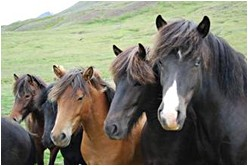

 Den islandske hest var simpelthen i århundreder garanten for islændingenes overlevelse, hævdes det af det prægtige dyrs mange fans. Intet mindre. Og noget er der utvivlsomt om det. Den kom til landet sammen med andre hårdføre væsner som landnamsfolkene, der havde fremavlet den på grundlag af kvaliteter, de havde fundet hos Shetlandsponyen og dennes slægtninge, Connemara- og Highlandsponyen. For alle tre forfædres vedkommende gælder det, at de er meget robuste og nøjsomme, både hvad foder og varmegrader angår, desuden færdes i hvert fald de to af dem helt ubesværet i højlandets svært fremkommelige terræn. Der er således set i relation til det islandske landskab og klima gode, brugbare gener i den islandske hest. På
Island håndhæver man i dag strengt et forbud imod
at importere andre hesteracer ja, heste i det hele taget, så
en islandsk konkurrencedeltager, der har været udenlands,
kan ikke vende tilbage, derfor har Islænderen beholdt sit
oprindelige udseende. Den er med sine ponygener ikke særlig
høj, har kort hals og hoved men kraftige skuldre, et diskret
hældende kryds er karakteristisk for den stærke ryg,
og de små hove finder fodfæste for korte, kraftfulde
ben. Halens og manens hårpragt er lang og tæt og beskytter
den sammen med dens tykke fedtlag mod kulden; når det blæser
voldsomt, finder flere heste sammen, stiller sig tæt op
ad hinanden med bagdelen vendt mod vinden og beviser således,
at også fortidens overlevelsesstrategier er bevaret. I dag
bruges den først og fremmest som ridedyr, og det vanskelige
terræn har skabt en exceptionel pålidelig, stærk
og behagelig ridehest, sikker på benene og med overskud
af temperament og løbevilje. Men selvom den er godmodig
og samarbejdsvillig, er der dog grænser for dens tålmodighed,
skal jeg hilse og sige fra min kone, der som rytterdebutant oplevede,
at hendes hest strejkede, da hun ville over et lille vandløb.
Den standsede simpelthen, var ikke til at rokke, og af dens meget
selvstændige udtryk i øjnene kunne man læse,
at for sin ulejlighed måtte den dog kunne kræve en
højere grad af professionalisme hos sin last, før
den gjorde sine hove våde. Uden at lade sig afficere af
diverse danske skældsord vendte den om og luntede sindigt
tilbage til sit indelukke. Stolthed og uafhængighed synes
at være fælles egenskaber hos både fire- og
tobenede beboere på sagaøen. Nu
vidste jeg så, hvorfor det lille ridedyr er så umådelig
populært over det meste af verden, at ethvert land med respekt
for sig selv har en Islænderklub, hvor der jævnligt
afholdes stævner. Dyrets højde på mellem ca.
120 cm ca. 145 cm gør det sammen med dets fine egenskaber
egnet som begynderhest for mange teenagere, hvilket selvfølgelig
er med til at skærpe interessen for det. I Danmark har
jeg hørt- gøres der et seriøst stykke avlsarbejde,
som dog nok hæmmes af, at man aldrig fra Island sender de
bedste dyr til konkurrencer i udlandet, dem reserverer man til
de nationale stævner; heste, der har været udenlands,
må jo ikke vende tilbage til øen på grund af
det tidligere omtalte importforbud men kan så indgå
i det danske avlsarbejde. Nej, vil man se ægte fuldblod,
må man til Island.
Under mit sidste besøg på øen travede jeg en tur i et øde område af Skidadalur på Tröllaskagahalvøen. Pludselig føltes det, som om jorden vibrerede under mig, samtidig med at en fjern torden langsomt steg i intensitet, og så dukkede der mere end et halvt hundrede Islændere op på stien, der førte ud fra deres græsningsområder langt inde i dalen. Foran flokken red et par islandske cowboys og viste vej, hvorhen ved jeg ikke, men synet var overvældende. Et væld af prustende, farverige dyr passerede forbi uden at ænse min uforstilte beundring for den lethed, hvormed de forcerede den stenknoldede vej. Jeg tænkte, at på en måde er den islandske hest stadig garant for overlevelse, ikke længere for øens beboere men for selve historien om et landnam, hvis succes næsten stred imod naturlovene. Copyright Preben Rasmussen(tekst) Copyright E.Frank-Rasmussen(fotos)
| |